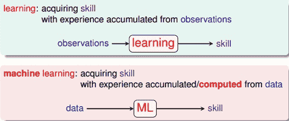
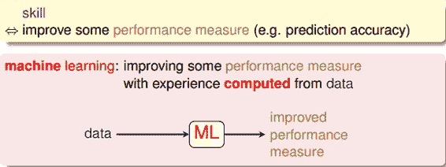
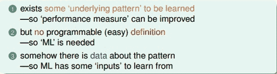
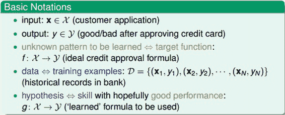
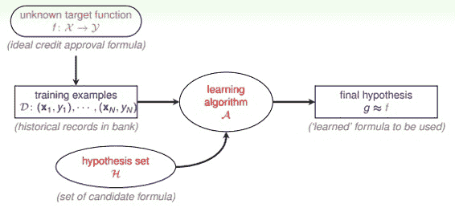

1 – The Learning Problem
最近在看NTU林轩田的《机器学习基石》课程，个人感觉讲的非常好。整个基石课程分成四个部分：
When Can Machine Learn?
Why Can Machine Learn?
How Can Machine Learn?
How Can Machine Learn Better?
每个部分由四节课组成，总共有16节课。那么，从这篇开始，我们将连续对这门课做课程笔记，共16篇，希望能对正在看这们课的童鞋有所帮助。下面开始第一节课的笔记：The Learning Problem。
一、What is Machine Learning
什么是“学习”？学习就是人类通过观察、积累经验，掌握某项技能或能力。就好像我们从小学习识别字母、认识汉字，就是学习的过程。而机器学习（Machine Learning），顾名思义，就是让机器（计算机）也能向人类一样，通过观察大量的数据和训练，发现事物规律，获得某种分析问题、解决问题的能力。

机器学习可以被定义为：Improving some performance measure with experence computed from data. 也就是机器从数据中总结经验，从数据中找出某种规律或者模型，并用它来解决实际问题。

什么情况下会使用机器学习来解决问题呢？其实，目前机器学习的应用非常广泛，基本上任何场合都能够看到它的身影。其应用场合大致可归纳为三个条件：
事物本身存在某种潜在规律
某些问题难以使用普通编程解决
有大量的数据样本可供使用

二、Applications of Machine Learning
机器学习在我们的衣、食、住、行、教育、娱乐等各个方面都有着广泛的应用，我们的生活处处都离不开机器学习。比如，打开购物网站，网站就会给我们自动推荐我们可能会喜欢的商品；电影频道会根据用户的浏览记录和观影记录，向不同用户推荐他们可能喜欢的电影等等，到处都有机器学习的影子。
三、Components of Machine Learning
本系列的课程对机器学习问题有一些基本的术语需要注意一下：
输入x
输出y
目标函数f，即最接近实际样本分布的规律
训练样本data
假设hypothesis，一个机器学习模型对应了很多不同的hypothesis，通过演算法A，选择一个最佳的hypothesis对应的函数称为矩g，g能最好地表示事物的内在规律，也是我们最终想要得到的模型表达式。

实际中，机器学习的流程图可以表示为：

对于理想的目标函数f，我们是不知道的，我们手上拿到的是一些训练样本D，假设是监督式学习，其中有输入x，也有输出y。机器学习的过程，就是根据先验知识选择模型，该模型对应的hypothesis set（用H表示），H中包含了许多不同的hypothesis，通过演算法A，在训练样本D上进行训练，选择出一个最好的hypothes，对应的函数表达式g就是我们最终要求的。一般情况下，g能最接近目标函数f，这样，机器学习的整个流程就完成了。
四、Machine Learning and Other Fields
与机器学习相关的领域有：
数据挖掘（Data Mining）
人工智能（Artificial Intelligence）
统计（Statistics）
其实，机器学习与这三个领域是相通的，基本类似，但也不完全一样。机器学习是这三个领域中的有力工具，而同时，这三个领域也是机器学习可以广泛应用的领域，总得来说，他们之间没有十分明确的界线。
五、总结
本节课主要介绍了什么是机器学习，什么样的场合下可以使用机器学习解决问题，然后用流程图的形式展示了机器学习的整个过程，最后把机器学习和数据挖掘、人工智能、统计这三个领域做个比较。本节课的内容主要是概述性的东西，比较简单，所以笔记也相对比较简略。
这里附上林轩田（Hsuan-Tien Lin）关于这门课的主页：
http://www.csie.ntu.edu.tw/~htlin/
注明：
文章中所有的图片均来自台湾大学林轩田《机器学习基石》课程。